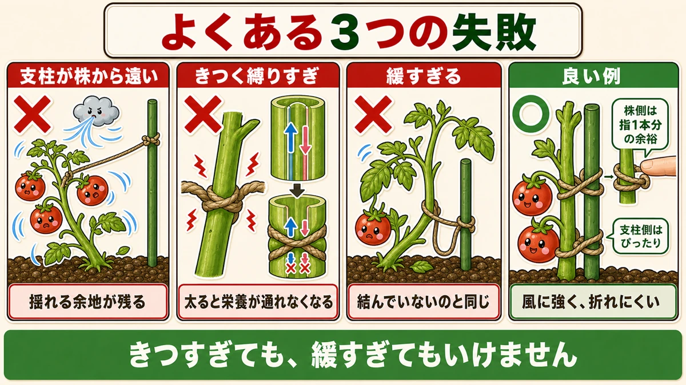
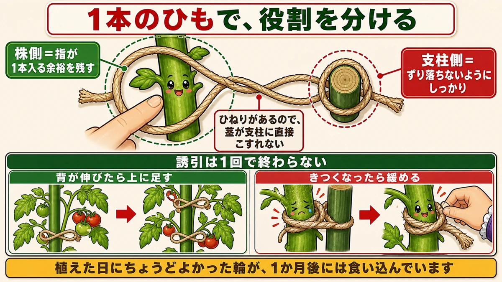
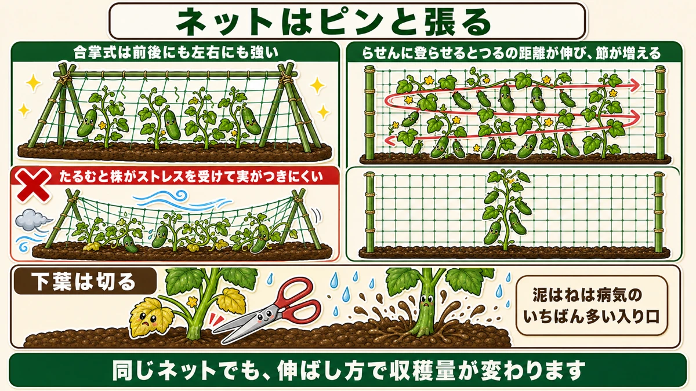
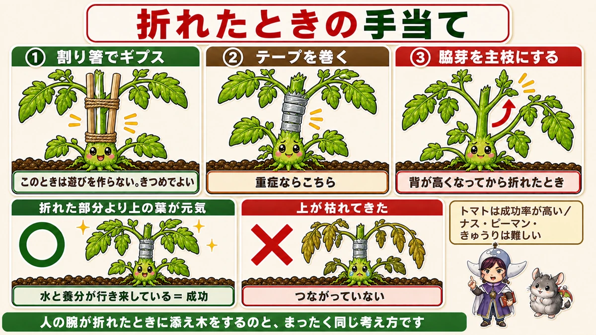

支柱の立て方と誘引のやり方｜8の字結び・きゅうりのネット・野菜別の支え方・折れたときの手当て
どうも、8150（えいこう）です🌱 家庭菜園歴8年、理科の教員免許を持っていて、有機・無農薬で野菜を育てています。
📖 この記事の目次
この記事で分かること
- 支柱は、株の近くに立てます。遠いと、結んでも株が揺れてしまいます。
- ひもは、株の側はゆとりを持たせて、支柱の側はしっかり結びます。茎はこれから太くなるので、きつく縛ると食いこんでしまいます。
- 誘引（ゆういん）は1回で終わりではありません。株が伸びるたびに、上へ上へと足していきます。
- きゅうりは、ネットをピンと張り、伸ばす方向を決めて誘引します。遅れると、つるが地面に広がって、あとから持ち上げるときに折れやすくなります。
- 枯れた下の葉や弱った葉は取って、風通しをよくします。
- 茎が折れてしまっても、トマトなら手当てで助かることがあります。
トマトやきゅうり、なすを植えたら、次にやるのが支柱立てと誘引です。
「支柱って、どこに立てればいいの？」「ひもはどれくらいきつく縛るの？」「きゅうりのネットがたるんでしまう」。やってみると、意外と分からないことが多いですよね。強い風の翌日、茎が折れていてがっかりした、という経験がある方もいると思います。
安心してください。支柱と誘引には、いくつかの決まったコツがあります。この記事では、よくある失敗から、正しい結び方、野菜ごとの支え方、折れてしまったときの手当てまで、順番に書いていきます。

早見：支柱と誘引の基本（ひと目で分かる目安）
よくある失敗
- 支柱が株から遠い：結んでも、株が風で揺れる
- 茎をきつく縛っている：茎が太ると、ひもが食いこむ
- 全体がゆるすぎる：ひもが支柱をずり落ちて、支えにならない
- 株元だけ結んでいる：上のほうが支えられず、風で倒れる
結び方の基本
- 株の側：ゆとりを持たせる
- 支柱の側：しっかり結んで、ずり落ちないようにする
- あいだで1〜2回ひねって、8の字にする（クッションになる）
- 株が伸びたら、上に新しく結び足す（トマトなら30cmくらいの間かくで）
支柱の長さの目安
- トマト、きゅうり、ゴーヤ、つるありいんげん：180〜210cmくらい
- なす、ピーマン、ししとう：120〜150cmくらい
- 苗を植えた直後の仮支柱：60〜90cmくらい
ひもの選び方
- 麻ひもなどの自然素材：使い終わったら土に返りやすい
- ビニールひも：丈夫で長持ち。畑に残らないように回収する
- 誘引用のクリップや結束具：結ぶ手間が省ける
支柱の種類
- 園芸用の支柱（中に金属の芯が入り、表面が緑色の樹脂で覆われたもの）：丈夫で長持ち。表面に小さなでこぼこ（いぼ）があるものは、ひもがずり落ちにくい
- 竹：手に入りやすく、自然に返る素材。何年か使うと、土に差した部分から傷みやすい
- 細い棒やあまり太くない支柱：仮支柱や、小さな野菜向き
支柱の太さは、トマトやきゅうりのように背が高く、実が重くなる野菜なら、太めのもの（直径16〜20mmくらい）を選ぶと安心です。なすやピーマンなら、少し細めでも支えられます。
仕立て方の型
- 直立式：1株に1本、支柱をまっすぐ立てる。トマトやなすなど、株ごとに支える野菜に
- 合掌式：畝の両側から斜めに立てた支柱を、てっぺんで交差させる。きゅうりやトマトを並べて育てるときに。前後左右からの力に強い
- あんどん式：プランターや鉢のまわりに支柱を何本か立て、輪っかでつないで囲う。つるを輪に巻きつけるように誘引する。プランターのきゅうりやあさがおなどに
育てる野菜と、場所の広さに合わせて選んでください。
作業の手順
ここからは、支柱立てと誘引の流れを、順番に書いていきます。
手順1：苗を植えたら、すぐに仮支柱を立てる
苗を植えたら、その日のうちに支柱を立てて結んでおきます。植えたばかりの苗は、根がまだ張っていないので、風で揺れると根が切れて、根づきが遅れてしまいます。
植えたばかりの小さな苗には、短めの仮支柱を斜めに差して、軽く結んでおく方法がよく紹介されます。斜めに差すと、根鉢（ポットから出した根と土のかたまり）に支柱が刺さりにくく、根を傷めずにすみます。
一方で、最初から長い本支柱を立てておく、という方法もあります（あとで両方の考え方を書きます）。
手順2：支柱は、株の近くに立てる
支柱は、株のすぐ近くに立てます。
株から遠いところに立てると、ひもで結んでも、株と支柱のあいだに距離があるので、風が吹くと株がぶらぶら揺れてしまいます。株のすぐそばを支柱が通るように立てるのがポイントです。
ただし、株元にまっすぐ深く差しこむと、根鉢に刺さって根を傷めることがあります。根鉢の少し外側に立てるか、植える前に支柱を立てておいて、そのそばに苗を植える、という順番にすると安心です。
支柱は、土に30cmくらいしっかり差しこみます。地面がかたいときは、水をかけて土をやわらかくしてから差すと入りやすくなります。浅いと、株が大きくなって重くなったときや、強い風の日に、支柱ごと倒れてしまいます。
手順3：8の字に結ぶ
ひもで株と支柱を結ぶときは、「株の側はゆるく、支柱の側はしっかり」が合言葉です。
- ひもを株の茎にかける。茎とのあいだに、少しゆとりを持たせる
- 株と支柱のあいだで、ひもを1〜2回ひねる
- ひもを支柱に回して、しっかり結ぶ
こうすると、ひもが8の字のような形になります。あいだでひねった部分がクッションになって、茎が支柱にこすれるのを防ぎます。
なぜ株の側をゆるくするのかというと、茎はこれからどんどん太くなるからです。最初にきつく縛ってしまうと、茎が太ったときに、ひもが食いこんでしまいます。食いこんだところは、水や養分の通り道が圧迫されて、上のほうの育ちが悪くなる可能性があります。
一方、支柱の側をゆるくすると、ひもが支柱をずり落ちてしまって、支えになりません。だから、支柱の側はしっかり結ぶんです。

手順4：結ぶ高さを考える
結ぶ高さも大切です。
- 苗が小さいうち：茎のまん中あたりで結ぶ。上のほうの茎は細くて折れやすいので、てっぺん近くは結ばない
- 株が育ってきたら：葉の付け根のすぐ下あたりで支えるようにする
株元の近くだけを結んでいると、上のほうが支えられず、風で大きく揺れたり、倒れたりします。株の高さに合わせて、何か所かで支えるようにしてください。
手順5：伸びたら、上に結び足す
誘引は、1回で終わりではありません。
夏野菜は、暖かくなると、1週間もしないうちにぐんぐん伸びていきます。伸びた部分は支えがないので、風で折れやすくなります。
- 株が伸びたら、上のほうに新しく結び足す
- トマトなら、30cmくらいの間かくで結んでいく
- 前に結んだところがきつくなっていないかも見て、食いこんでいたらゆるめる
週に1回くらい、見回りのついでに、誘引の結び足しとゆるめ直しをしておくと安心です。
手順6：仮支柱から本支柱に替える
仮支柱で育てていた苗が大きくなったら、本支柱に替えます。
ここで、よくある失敗があります。仮支柱に結んだひもを外し忘れたまま、仮支柱を引き抜いてしまうことです。夏野菜はすぐに大きくなるので、仮支柱に結んだひもは、いつのまにか葉に隠れて見えなくなっています。そのまま仮支柱を抜くと、ひもに引っぱられて、苗ごと抜けてしまうことがあるんです。
仮支柱を抜く前に、必ずひもを探して外してから抜いてください。
手順7：実の重さも支える
株が育って実がつくと、今度は実の重さで枝が折れることがあります。
- トマト：実がたくさんついた房（果房）が重くなったら、房の付け根を支えるように結ぶ
- なす：枝の伸びる方向に合わせて、枝ごと支柱に誘引する
- 小玉スイカやメロンを立体栽培する場合：実をネットや袋で吊って、重さを受ける
つるや茎を結ぶことと、重い実を受けることは、別の作業です。実が大きくなってきたら、実の重さの支えも考えてください。
手順8：防虫ネットと支柱の擦れに気をつける
防虫ネットをかけている畝で支柱を立てると、風でネットが揺れて、支柱の先とこすれて破れることがあります。支柱の先に、使い終わったペットボトルのふたや布をかぶせておくと、ネットが傷みにくくなります。
また、ネットの中で株が大きくなって、葉がネットに押しつけられていると、そこから虫に卵を産みつけられることがあります。株の大きさに合わせて、ネットの高さにも余裕を持たせてください。
手順9：シーズンが終わったら片づける
収穫が終わったら、支柱とネット、ひもを片づけます。
- ひもは、すべて外して回収する。特にビニールひもや結束具は、畑に残らないように
- ネットは、つるや葉を取り除いてから、たたんでしまう。つるが絡んだまま置いておくと、次に使うときに大変です
- 支柱は、土を落として乾かしてから、雨の当たらない場所に保管する。傷んだものや折れそうなものは、この機会に取りかえる
片づけのときに、支柱が刺さっていた場所の土や、株の根のようすを見ておくと、次の作付けの参考になります。
きゅうりのネットと誘引
ネットの張り方
きゅうりは、つるの先の巻きひげで、ネットにつかまりながら上へ登っていく野菜です。ネットは、つるが登るための足場になります。
- まず支柱で骨組みを作る
- ネットは、絡まないように、端から順番に広げていく
- ネットの端を骨組みにしっかり固定する
- 横に渡した支柱で張りを調整して、ピンと張る
ネットがたるんでいると、つるや実の重さでネットがたわんで、株全体が揺れてしまいます。揺れるたびに、つるや葉が傷つきます。また、つるがうまくつかまれません。ネットは、ピンと張るのが基本です。

合掌式という組み方
支柱を、畝の両側から斜めに立てて、てっぺんで交差させて結ぶ組み方を「合掌式（がっしょうしき）」と言います。手を合わせたような形になるので、この名前がついています。
合掌式は、前後左右からの力に強く、家庭菜園では扱いやすい組み方と言われます。交差したところに横の支柱を渡すと、さらにしっかりします。
ただ、組み方には、合掌式のほかにも、まっすぐ立てる直立式、四隅に支柱を立てる方法など、いろいろあります。畑の広さや、育てる株の数に合わせて、自分に合った方法を選んでください。
誘引の方向を決めておく
きゅうりのつるは、ぐんぐん伸びていきます。どちらの方向に伸ばすのか、あらかじめ決めておくと、つるが混みあわずにすみます。
たとえば、こんな伸ばし方があります。
- つるの先（成長点）を右へ誘引していく
- ネットの端まで来たら、少しずつ左へ向きを変える
- そうすると、つるがらせんを描くように、ネットを登っていく
らせんに伸ばすと、ネットの高さが限られていても、つるの長さを長くとれます。ただ、つるの伸ばし方に決まったルールはありません。子づる（わきから伸びるつる）がたくさん出るタイプの品種なら、親づるはまっすぐ上へ、子づるは左右へ、という伸ばし方もあります。
誘引が遅れると、どうなるか
きゅうりの誘引が遅れると、次のようなことが起こりやすくなります。
- つるが地面をはうように広がって、株元が混みあう
- あとからネットに持ち上げようとすると、つるや葉に負担がかかって、折れやすくなる
- 株元の風通しが悪くなり、湿気がこもる
湿気がこもると、病気が出やすくなるほか、受粉がうまくいかなくなることがある、という説明もあります。つるがネットに届く長さになったら、早めに誘引を始めましょう。
ネットを使わない方法
きゅうりは、ネットを張らずに、合掌に組んだ支柱に、親づるを直接誘引していく方法もあります。株の数が少ないときや、ネットを張るのが大変なときに向いています。
また、狭い場所で育てるために、支柱を井の字のように組んで、子づるの通り道を長くとる、という工夫をしている人もいます。
支柱のてっぺんまで来たら、摘心する
トマトやきゅうりは、支柱やネットのいちばん上まで伸びると、それ以上は支えられなくなります。
- トマト：主の茎が支柱の高さを超えそうになったら、先を摘んで（摘心）、それ以上伸ばさない。株の力を、ついている実を育てるほうへ回せる
- きゅうり：親づるがネットのいちばん上まで届いたら、先を摘む。そのあとは、わきから伸びる子づるや孫づるに実をつけさせて、収穫を続ける
支柱の高さは、どこまで伸ばすかの目安にもなります。手の届く高さで止めておくと、収穫や手入れも楽になります。
ゴーヤで緑のカーテンを作るなら
ゴーヤは、窓辺やベランダで「緑のカーテン」として育てられることも多い野菜です。
- 窓の前に、上から下までネットを張る。ネットの上と下を、しっかり固定する
- つるがネットに届いたら、横に広がるように誘引する
- 親づるが2mくらいまで伸びたら先を摘み、子づるを左右に広げる
ネットが風であおられると、つるや葉が傷みます。強い風が吹く場所では、ネットの横もひもで固定しておきましょう。
野菜ごとの支え方
トマト
- 長さ180〜210cmくらいの支柱を、1株に1本
- 主の茎（主枝）を1本伸ばす1本仕立てが基本
- 30cmくらいの間かくで、8の字に誘引していく
- 実の房が重くなったら、房の付け根も支える
なす
- 長さ120〜150cmくらいの支柱
- 主の茎と、勢いのよいわき枝2本を残す3本仕立てが一般的
- それぞれの枝を、伸びる方向に合わせて支柱に誘引する
- 支柱を斜めに追加して、3本の枝をそれぞれ支える方法もある
ピーマン・ししとう
- 長さ120〜150cmくらいの支柱
- 枝が細く、実がたくさんつくと重みで折れやすいので、主な枝を支柱に誘引する
- 株が大きくなったら、株のまわりを支柱とひもで囲う方法もある
きゅうり・ゴーヤ
- 長さ180〜210cmくらいの支柱で骨組みを作り、ネットを張る
- つるがネットに届いたら、早めに誘引を始める
- 巻きひげがつかまるまでは、ひもで軽く結んで導く
つるありいんげん・えんどう
- ネットか、支柱を何本も立てて、つるが絡まるようにする
- つるは自分で巻きつくので、最初だけ支柱やネットのほうへ導いてあげる
ブロッコリー・キャベツなど背の高くなる秋冬野菜
秋冬野菜でも、ブロッコリーのように背が高くなるものは、強い風で倒れることがあります。株元に土を寄せたうえで、短い支柱を立てて支えておくと安心です。
すでに曲がってしまった株は、無理にまっすぐに戻そうとすると折れることがあります。そのままの角度で支えてあげてください。
プランターでの支柱
プランターでも、支柱と誘引の考え方は同じです。
- プランターの土は浅いので、支柱が倒れやすい。プランターの底近くまで、しっかり差しこむ
- 何本かの支柱を立てて、上で結んだり、輪っかでつないだりすると安定する
- ベランダでは、手すりなどに支柱を結びつけて、風で倒れないようにする
ミニトマトなら、プランター1つに1〜2本の支柱、きゅうりならあんどん式やネットを使う方法が育てやすいです。
誘引のタイミングの目安
- 植えた日：仮支柱を立てて、軽く結ぶ
- 植えて1〜2週間：株が伸びてきたら、上に結び足す。本支柱に替えるならこのころ
- その後は週に1回：伸びた分を結び足し、食いこんでいるところをゆるめる
- 実がつき始めたら：実の重さで枝が垂れていないか見て、必要なら支える
- 台風や強い風の前：結び目と支柱のぐらつきを確かめる
下の葉の整理
弱った葉は、取って風通しをよくする
誘引を始めたら、株元の弱った葉や、枯れ始めた葉は、取り除いておきます。
- 風通しがよくなって、病気が出にくくなる
- 雨で泥がはねて葉につくのを防げる
- 実や株の状態が見やすくなる
ただし、元気な葉まで全部取ってしまう必要はありません。葉は、光を受けて栄養を作る大切な部分です。黄色くなった葉、枯れかけた葉、病気の出た葉を中心に整理してください。
それでも茎が折れたときは
トマトなら、助かることがある
どんなに気をつけていても、強い風や、作業中のちょっとした拍子に、茎が折れてしまうことがあります。
完全にちぎれていなければ、手当てで助かることがあります。特にトマトは、手当てがうまくいく可能性が高い野菜だと言われます。一方で、なす、ピーマン、きゅうりは、うまくいきにくい、と言われます。

方法1：割りばしで添え木をする
- 折れたところを、元の位置にそっと戻す
- 割りばしなどを添え木として当てる
- ひもやテープで、少しきつめに固定する
ふだんの誘引では株の側をゆるく結びますが、折れたところの手当てでは、つなげることが目的なので、少しきつめに固定してかまいません。
方法2：テープを巻く
折れたところを元の位置に戻して、園芸用のテープなどを何周か巻いて固定する方法もあります。
うまくいったかの見分け方
手当てをしたら、折れたところより上の葉のようすを見てください。
- 上の葉が元気なまま、しおれずにいる：つながった可能性が高い
- 上の葉がしおれて、元に戻らない：つながらなかった可能性が高い
何日で治る、という決まった日数はありません。数日ようすを見て、上の葉が元気なら、そのまま育てます。
つながらなかったときの選択
- まだ株が小さく、植えつけの時期に間に合うなら：新しい苗を植え直す
- 株が大きくなってからなら：折れたところより下にあるわき芽を伸ばして、新しい主の茎として育てる
トマトは、わき芽がよく伸びるので、主の茎が折れても、わき芽を育てれば収穫を続けられることがあります。
わき芽をかくときにも、折れやすい
トマトのわき芽をかくときに、勢いあまって主の茎まで折ってしまうことがあります。わき芽は、根元を指でつまんで、横に倒すようにしてかくと、主の茎を傷めにくくなります。作業は、茎がしなやかな日中に行うのがおすすめです。
失敗の見分け方
茎にひもの跡がくっきりついている
株の側をきつく縛りすぎています。ひもが食いこんでいたら、すぐにゆるめて結び直してください。
風の翌日、株が大きく傾いていた
支柱が株から遠い、支柱の差しこみが浅い、結んでいる場所が少ない、などが考えられます。支柱を立て直し、上のほうも結び足してください。
ひもが支柱をずり落ちて、株が垂れ下がっている
支柱の側の結びがゆるい可能性があります。支柱の側はしっかり結びましょう。
きゅうりのつるが、ネットの裏側に回ってしまった
誘引が遅れたり、方向を決めていなかったりすると、つるがネットの裏側に回りこむことがあります。収穫や誘引の作業がしにくくなるので、つるがまだやわらかいうちに、作業する側へ導いてあげてください。
ネットが真ん中でたるんできた
つるや実の重さで、ネットのまん中がたるむことがあります。横に渡した支柱を追加したり、たるんだ部分を上の支柱に結び直したりして、張りを戻してください。ネットを張るときに、上と下をしっかり固定しておくと、たるみにくくなります。
仮支柱を抜いたら、苗も一緒に抜けた
ひもの外し忘れです。根が無事なら、すぐに植え直して、たっぷり水をやってください。
説明が分かれていること
仮支柱を使うか、最初から本支柱を立てるか
- 小さい苗のうちは、仮支柱を斜めに差して支え、大きくなったら本支柱に替える、という方法
- 最初から本支柱を立てておく、という方法
仮支柱から始めると、根鉢を傷めずにすみますが、替えるときにひもを外し忘れて苗を抜いてしまう失敗が起きやすくなります。最初から本支柱を立てると、替える手間と失敗はなくなりますが、まっすぐ深く差すと根鉢に刺さって根を傷めることがあります。
どちらを選んでも、「根鉢を傷めない位置に立てる」「ひもを外し忘れない」という2点に気をつければ大丈夫です。
ひもは、自然素材か、化学繊維か
- 自然素材の麻ひもを使う。化学繊維のひもは、畑に残ると土に返らないので使わないでほしい、という考え方
- 誘引用の道具（結束具）を使うと、作業がぐっと楽になる、という考え方
どちらにも理由があります。ビニールひもや結束具を使う場合は、片づけのときに畑に残らないよう、しっかり回収してください。
きゅうりは、ネットか、支柱に直接か
- ネットをピンと張って、誘引の方向を決めて登らせる、という方法
- ネットを張らずに、合掌に組んだ支柱に親づるを誘引する、という方法
- ネットに自然に絡ませて、つるを下ろしながら育てる、という方法
株の数、畑の広さ、作業のしやすさで選んでください。
結び目のゆとりの大きさ
株の側に「少しゆとりを持たせる」という点は共通していますが、どれくらいのゆとりかは、はっきりした決まりがあるわけではありません。茎が太っても食いこまない程度、と考えて、見回りのたびに食いこんでいないか確かめるのがいちばん確実です。
よくある質問
Q. 支柱は、植える前と植えたあと、どちらに立てますか？
A. どちらでもできます。植える前に立てておけば、根鉢を傷める心配がありません。植える場所の目印にもなるので便利です。植えたあとに立てる場合は、根鉢の少し外側に差すようにしてください。
Q. 雨の日に誘引しても大丈夫ですか？
A. 雨の日は、茎や葉が濡れていて、傷から病気が入りやすくなります。誘引のときにどうしても茎や葉にふれるので、小さな傷ができやすいんです。また、足元もぬかるんで作業しにくいので、できれば晴れた日に行いましょう。
Q. 竹の支柱でもいいですか？
A. 使えます。竹は手に入りやすく、自然に返る素材です。竹やぶが近くにあれば、自分で切ってきて使うこともできます。切った竹は、よく乾かしてから使うと長持ちします。ただ、何年も使うと、土に差した部分から傷んで折れやすくなるので、ときどき確かめてください。市販の金属の芯が入った園芸用支柱は、丈夫で長く使えます。
Q. 支柱の長さが足りなくなりました
A. 支柱を継ぎ足す方法もありますが、トマトなら、主の茎の先を摘んで（摘心）、それ以上伸ばさないようにする方法もあります。きゅうりなら、ネットのいちばん上まで届いたら、つるの先を摘んで、子づるを伸ばして収穫を続けます。
Q. 台風の前には、何をすればいいですか？
A. 支柱がぐらついていないか確かめ、ゆるんだひもは結び直します。風で実が落ちることもあるので、収穫できる実は前の日までにとっておきましょう。株の上のほうも結び足しておきましょう。ネットや支柱の骨組みは、横の支柱を追加したり、すじかいを入れたりして補強すると安心です。
Q. 強い風で支柱ごと倒れてしまいました
A. 株を起こして、支柱を立て直します。根が浮いていたら、株元に土を寄せて軽く押さえ、たっぷり水をやってください。折れた枝がなければ、数日で元気を取り戻すことが多いです。支柱は前より深く差しこみ、斜めに補強の支柱を足しておくと、次の風に強くなります。
Q. なすの3本仕立ての枝は、どう支えればいいですか？
A. 主の茎には、まっすぐ立てた支柱を、残した2本のわき枝には、それぞれ斜めに立てた支柱を添えて、V字のように広げて誘引する方法がよく使われます。枝が広がると、株の中まで日が当たり、風通しもよくなります。実がたくさんついてくると枝が重くなるので、実の重さで枝が裂けないよう、こまめに支え直してください。
Q. 子どもと一緒に支柱立てをしてもいいですか？
A. ぜひ一緒にやってみてください。支柱を差したり、ひもを8の字に結んだりするのは、子どもにもできる作業です。支柱の先が目の高さにくることがあるので、支柱の先にキャップをつけたり、作業中はまわりに気をつけたりして、安全に楽しんでください。
Q. 誘引用のクリップは便利ですか？
A. ひもを結ぶ手間がなく、付け外しも簡単なので、とても便利です。手が汚れていたり、手袋をしていたりしても扱いやすいのも助かるところです。ただ、茎が太ってくると、クリップがきつくなることがあるので、ときどき確かめて、きつければ付け直してください。
Q. 支柱やネットを立てる向きは、気にしたほうがいいですか？
A. できれば、畝を南北の向きにして、ネットもその向きに張ると、株の両側に日が当たりやすくなります。東西の向きにすると、北側に日陰ができやすくなります。ただ、畑の形によっては難しいこともあるので、できる範囲で考えてみてください。
Q. 支柱は何年くらい使えますか？
A. 園芸用の支柱なら、雨の当たらない場所に保管すれば、何年も使えます。表面の樹脂が割れて、中の金属が見えてきたら、さびて弱くなっているので取りかえどきです。竹の支柱は、土に差した部分から傷みやすいので、数年で取りかえることが多いです。
Q. ひもの代わりに、針金を使ってもいいですか？
A. 針金は細くかたいので、茎に食いこんで傷つけやすく、株を結ぶのにはあまり向いていません。夏の日差しで熱くなることもあり、茎にふれていると傷める原因になります。支柱どうしを固定するのには便利です。株を結ぶときは、ひもか、園芸用の誘引クリップを使ってください。
Q. つるがネットに絡みすぎて、収穫しにくくなりました
A. つるの伸ばす方向を決めずに放っておくと、ネットのあちこちに絡んで、実が見えにくくなります。つるがまだやわらかいうちに、方向を決めて誘引し直すと、そのあとの収穫が楽になります。混みあった部分は、古い葉や弱った子づるを整理して、風通しをよくしましょう。
Q. 誘引した茎が、ひもの上で折れ曲がっています
A. 結ぶ位置が、茎の重さを受け止めきれていないのかもしれません。葉の付け根のすぐ下で支えるように結び直すか、上のほうにもう1か所結び足してください。
学ぶ🔬 なぜ茎をきつく縛ってはいけないのか
ここからは、支柱と誘引のしくみについて、少しだけ深く書いておきます。読み飛ばしても大丈夫です。
茎の中には、水と養分の通り道がある
植物の茎の中には、根から吸った水を上へ運ぶ通り道と、葉で作った養分を体のあちこちへ運ぶ通り道があります。これらは、茎の表面に近い部分を通っています。
茎をきつく縛ると、この通り道が外から圧迫されてしまいます。茎が太るにつれて、ひもはどんどん食いこんでいき、通り道がせまくなる可能性があります。株の側にゆとりを持たせるのは、茎が太っても通り道をふさがないためなんです。
なぜ8の字にひねるのか
ひもを株と支柱のあいだでひねると、ひもが交差する部分ができます。この部分が、株と支柱のあいだのクッションになって、茎が直接支柱にこすれるのを防ぎます。
風で株が揺れるたびに、茎が支柱にこすれると、そこが傷になって、病気が入るきっかけになることがあります。8の字に結ぶのは、茎を守るための工夫なんですね。
なぜ揺れると、育ちが悪くなるのか
植えたばかりの苗の根は、まだ細く、土にしっかり張っていません。風で株が揺れると、根も一緒に揺さぶられて、伸び始めた細い根が切れてしまいます。
根が切れると、水や養分を吸う力が弱まり、根づくまでに時間がかかります。植えた日に支柱を立てるのは、根を落ち着かせて、早く根づかせるためです。
なぜきゅうりは、巻きひげでつかまるのか
きゅうりの巻きひげは、何かにふれると、それに巻きつくように曲がる性質があります。指でそっとふれてみると、少しずつ曲がっていくのが分かることもあります。ふれた側と反対側で、成長の速さが変わることで、くるくると巻きついていくんです。
この性質のおかげで、きゅうりはネットや支柱をつたって、自分で上へ登っていけます。ただ、最初のうちは、巻きひげがネットまで届かないことも多いので、ひもで軽く結んでネットへ導いてあげると、その後は自分でどんどん登っていきます。
なぜ支柱は深く差すのか
背が高く育った株は、葉がたくさん茂って、風をまともに受けるようになります。葉の多い株は、帆のように風を受けて、思った以上に大きな力が支柱にかかります。
支柱の差しこみが浅いと、この力に耐えきれずに、支柱ごと傾いてしまいます。土に30cmくらいしっかり差しこむのは、てこの原理で、上にかかる力を土の中で受け止めるためです。合掌式が強いのも、支柱どうしが支え合って、力を分散しているからなんですね。
なぜ下の葉を取ると、病気が減るのか
株元の葉が茂りすぎると、風が通りにくくなり、湿気がこもります。多くの病気のもとになる菌は、湿った環境で増えやすいので、株元が蒸れていると病気が出やすくなるんです。
また、雨が降ると、地面の土がはねて、低い位置の葉につきます。土の中には病気のもとがいることがあるので、泥がついた葉から病気が広がることがあります。下の葉を整理するのは、風通しをよくして、泥はねから株を守るためです。
なぜトマトは、折れてもつながりやすいのか
トマトの茎は、傷ついたところから新しい組織を作って、傷をふさぐ力が比較的強いと言われます。また、茎から根を出しやすい性質もあります（茎の途中から、白い小さな根が出ているのを見たことがある方もいると思います）。
こうした性質のおかげで、トマトは折れたところをしっかり固定しておくと、つながって回復することがあるんです。
まとめ
ここまで読んでくださって、ありがとうございます！
支柱と誘引のポイントを、もう一度まとめておきます。
- 苗を植えたら、その日のうちに支柱を立てて結ぶ
- 支柱は株の近くに。ただし根鉢に刺さないように
- 株の側はゆるく、支柱の側はしっかり。あいだで1〜2回ひねって8の字に
- 伸びたら上に結び足す。食いこんでいたらゆるめる
- 仮支柱を抜くときは、ひもを外してから
- きゅうりのネットはピンと張り、伸ばす方向を決めて早めに誘引
- 弱った下の葉は取って、風通しをよく
- トマトが折れたら、添え木やテープで固定。上の葉が元気なら回復のサイン
支柱と誘引は、地味な作業ですが、株を風や重さから守り、長く収穫を楽しむための大事な土台です。ちょっとした結び方の違いで、株の育ち方や、風の強い日の被害の大きさが変わってきます。
毎週の見回りのときに、ひもの食いこみと支柱のぐらつきを確かめる。それだけで、夏のあいだ株をしっかり守ることができます。
まずは、植えたばかりの苗のひもを、8の字に結び直すところから始めてみてください🍅
麻ひも
株側はゆるく、支柱側はきつく。麻ひもはそのゆるさを作りやすく、シーズンが終わればそのまま土に還ります。
![[商品価格に関しましては、リンクが作成された時点と現時点で情報が変更されている場合がございます。]](https://hbb.afl.rakuten.co.jp/hgb/56bc2b48.a5f55627.56bc2b49.c4ff0d7c/?me_id=1372205&item_id=10005292&pc=https%3A%2F%2Fthumbnail.image.rakuten.co.jp%2F%400_mall%2Faudiofuntech%2Fcabinet%2Fproducts%2Fetc%2Fetc06%2F7052-1.jpg%3F_ex%3D240x240&s=240x240&t=picttext "[商品価格に関しましては、リンクが作成された時点と現時点で情報が変更されている場合がございます。]")

支柱150cm
仮支柱にちょうどいい長さです。本支柱に切り替えるまでの1か月を支えます。
![[商品価格に関しましては、リンクが作成された時点と現時点で情報が変更されている場合がございます。]](https://hbb.afl.rakuten.co.jp/hgb/56d221a0.da732c49.56d221a1.b57a6709/?me_id=1230952&item_id=10017113&pc=https%3A%2F%2Fthumbnail.image.rakuten.co.jp%2F%400_mall%2Fnou-nou%2Fcabinet%2F5010356000109-01.jpg%3F_ex%3D240x240&s=240x240&t=picttext "[商品価格に関しましては、リンクが作成された時点と現時点で情報が変更されている場合がございます。]")
支柱クリップ
ひもが苦手なら、これで留めるだけでも構いません。茎を締めつけないのが利点です。

きゅうりネット
きゅうりは誘引が遅れると実がつきません。植えたらすぐ張ってください。
![[商品価格に関しましては、リンクが作成された時点と現時点で情報が変更されている場合がございます。]](https://hbb.afl.rakuten.co.jp/hgb/56d221a0.da732c49.56d221a1.b57a6709/?me_id=1230952&item_id=10006162&pc=https%3A%2F%2Fthumbnail.image.rakuten.co.jp%2F%400_mall%2Fnou-nou%2Fcabinet%2Fnousi2%2F0108008000005.jpg%3F_ex%3D240x240&s=240x240&t=picttext "[商品価格に関しましては、リンクが作成された時点と現時点で情報が変更されている場合がございます。]")
あわせて読みたい